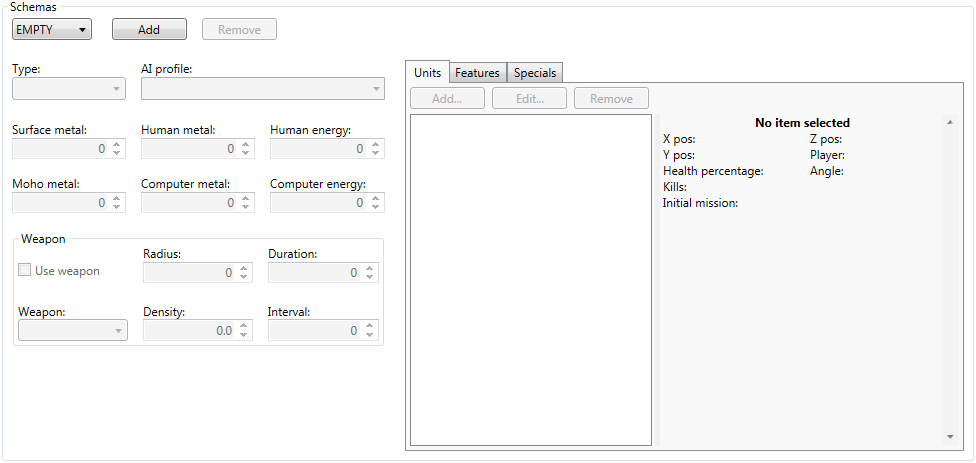

The schema section is where you can define the starting conditions for the map, whether it's for a skirmish/multiplayer game or for one of the three campaign difficulties. You can create up to four different schemas, one for each schema type. The types are: Network 1, Easy, Medium, Hard. Looking through the vanilla maps you'll note that skirmish maps will contain a single Network 1 schema, while missions will have one for each campaign difficulty. Given that a map can contain up to four schemas, it should be possible for a map to be played both as a campaign mission as well as a skirmish map.
To create a new schema, first select an "EMPTY" schema and then click the "Add" button. You will now be able to modify the schema fields, as well as add new units, features, and specials. To remove a schema, simply select the schema you wish to remove by selecting it in the drop down box, and then click the "Remove" button. A prompt will ask if you are sure you wish to proceed, clicking the second "Remove" button will confirm your desicion.
There are eight general schema fields: type, AI profile, surface metal, moho metal, human metal, human energy, computer metal, and computer energy.
This is a simple drop down box where you can select what type of schema this is. Network 1 will be chosen for skirmish and multiplayer games. Easy, Medium, and Hard will be chosen if the respective campaign diffuculty is chosen.
Here you can choose what AI profile the AI will run with. Or you can type in your own custom profile name.
These two fields determine how much metal the basic and moho metal extractors will produce. These function just like the tidal and solar strength fields where a value of 4 will mean that 4 metal will be produced.
These determine the starting amount of metal and energy for the player. These will be ignored by the values set in the skirmish menu, so they are only really used for campaigns.
These are exactly the same as the human metal and energy fields, except they're for copmuter players.